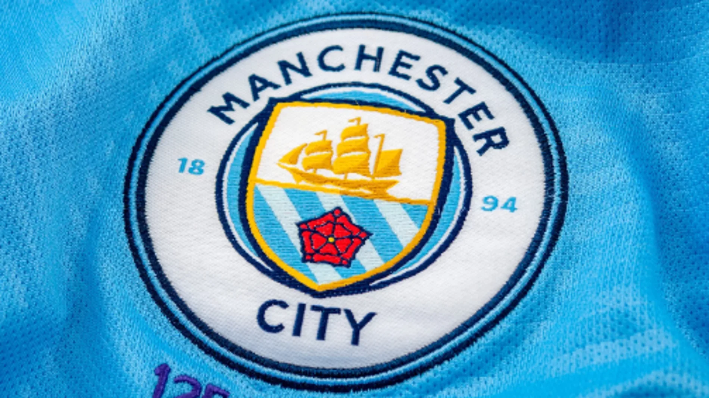
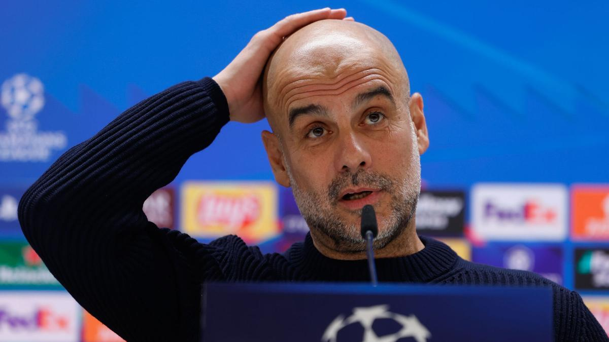

Cómo empezó la investigación
En febrero de 2023, la Premier League remitió el caso del Manchester City a una comisión independiente. Las acusaciones se refieren a las temporadas 2009/10 a 2017/18 y surgieron tras una investigación de cuatro años sobre las finanzas del club.

Entre los cargos figuran presuntas infracciones relacionadas con la información financiera, los ingresos por patrocinio y la declaración de pagos a entrenadores y jugadores. Son alegaciones presentadas por la liga; no deben confundirse con hechos probados.
La Premier League también acusa al club de no cooperar plenamente con su investigación. El Manchester City ha rechazado las acusaciones y ha declarado que cuenta con pruebas para respaldar su posición.
Qué está en discusión
El expediente incluye alegaciones sobre la exactitud de la información financiera, los ingresos comerciales, la remuneración de entrenadores y jugadores, el cumplimiento de reglas de la UEFA y las normas de sostenibilidad financiera de la Premier League. La comisión independiente debe evaluar las pruebas y los argumentos de ambas partes.


Actualización
La Premier League publicó una nota sobre una apelación
El 2 de octubre de 2026, la liga publicó un comunicado titulado «Manchester City FC appeal decision of independent Commission». Consulta el comunicado para conocer los detalles; este artículo no presupone el resultado de la apelación.
Leer el comunicado del 2 de octubre de 2026